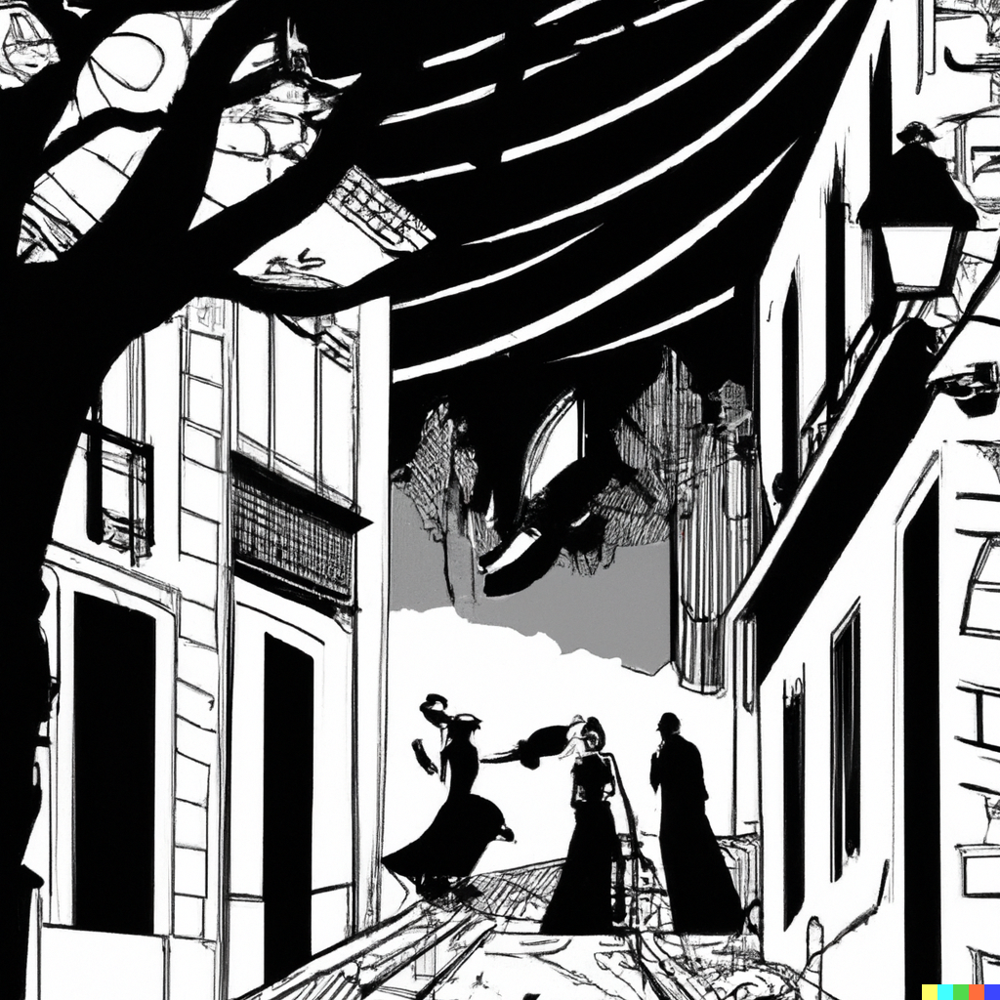

En el oscuro y sórdido barrio de Lusuriaga, la noche era cómplice de los secretos y el crimen. Las luces mortecinas de los faroles apenas lograban penetrar la densa niebla que se arrastraba por las calles empedradas. Elena, una detective privada de mirada afilada y espíritu inquebrantable, caminaba por aquel laberinto urbano. Sus pasos resonaban en los callejones desiertos mientras investigaba la desaparición de una joven prometedora. En su camino, se encontró con Freddie "Dos Caras", un informante con más cicatrices en su rostro que palabras en su boca. Freddie le susurró sobre una oscura organización que operaba desde las sombras de Lusuriaga, vendiendo vidas y destinos como si fueran mercancía. A medida que Elena desentrañaba la madeja de intrigas y corrupción, se dio cuenta de que las verdades ocultas estaban entrelazadas con los pilares mismos del barrio. Pero no se amedrentó, sabía que solo exponiendo la podredumbre bajo la superficie de Lusuriaga podría salvar a la joven y liberar al barrio de su letal abrazo.
